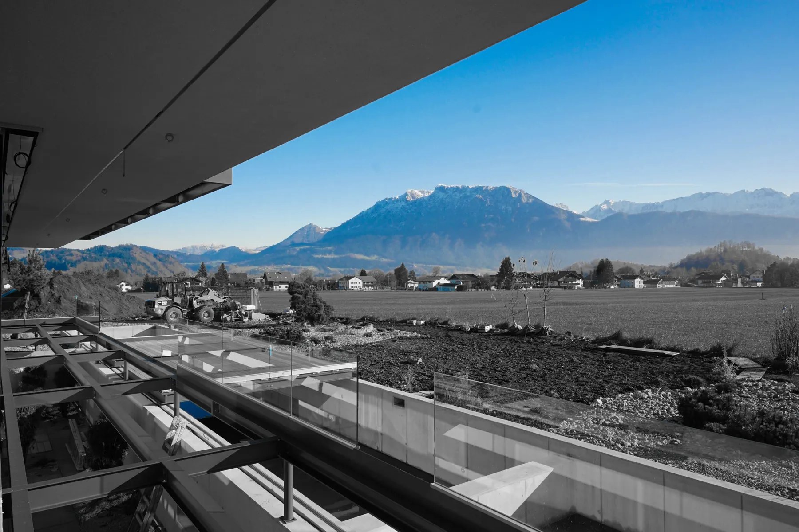
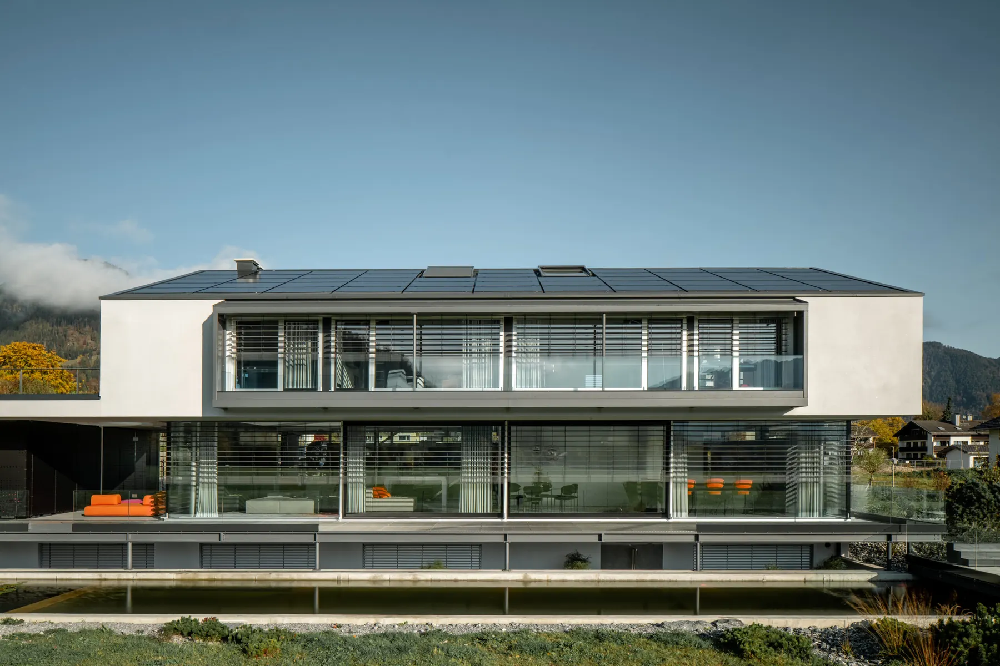
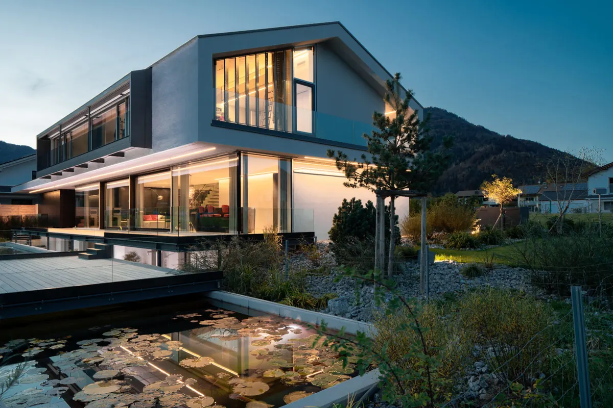

SHINE ON ist ein Projekt, das aus der Reihe tanzt, im allerbesten Sinn. Es handelt sich nämlich um ein …
Showroom Shine On, Oberaudorf
SHINE ON ist ein Projekt, das aus der Reihe tanzt, im allerbesten Sinn. Es handelt sich nämlich um ein Architektenwohnhaus der besonderen Art, das im Alpenvorland realisiert wurde
Das Grundstück am Ortsrand des oberbayerischen Oberaudorf liegt an einem geschützten Wiesengrund, hinter dem sich die Alpen von Bayern bis Tirol in einem unvergleichlichen Panorama reihen. Eine besondere Situation, in die sich das Architektenpaar Laurent und Susanne Brückner auf Anhieb verliebte. Sie wussten sofort, dass hier kein normales Haus, wie es landauf und landab im Voralpenland steht, entstehen kann und entwickelten mit ihrem Architekten-Team eine besondere Idee:
Competition
Wohnhaus Oberaudorf- Traditionelle Architektur modern interpretiert
Eine auf filigranen Stahlstützen schwebende Box beherbergt die Schlafräume des am Wiesenrand stehenden Gebäudes „Shine On“. Der sich darunter ergebende Raum ist weitgehend verglast und gibt einen einzigartigen Blick über Felder und Wiesen auf das imposante Bergmassiv des Wilden Kaisers frei.
Vielfältige Lichteinblicke
Während in den Schlafbereichen jeder Winkel ausgenutzt wird, ist der Wohnraum im Erdgeschoss offen und frei gestaltet. Die verglaste Südseite des Gebäudes gewährt atemberaubende Ausblicke und je nach Sonnenstand vielfältige Lichteinfälle. Das Gebäude selbst besteht aus einer Massivholzkonstruktion, die auf einem Sockel aus Beton ruht. Sämtliche Holzkonstruktionen sind vorgefertigt auf die Baustelle geliefert worden. Der Beton zieht sich im Inneren als Sichtbeton durch das Einfamilienhaus.
Die Gebäudetechnik steht im völligen Einklang mit der Natur. Durch Geothermiebohrungen, die etwa 60 Meter in die Tiefe reichen, wird das Gebäude im Winter beheizt und im Sommer gekühlt. Der Strom, der für die Umkehrwärmepumpe benötigt wird, wird zu 100 % aus der Photovoltaikanlage generiert. Diese erstreckt sich über die komplette Dachfläche und bildet mit dem Dach eine gestalterische Einheit. Durch die Verwendung der natürlichen Ressourcen entsteht ein völlig autarkes Gebäude, das mehr oder weniger nebenkostenfrei betrieben werden kann. Gleichzeitig wird die Natur maximal geschont.
Digitale Baustellenrevolution: Papierlose Umsetzung mit BimX

Die Baustelle des Bauvorhabens wurde mittels BimX komplett papierlos ausgeführt. Aus dem vorher beschriebenen Modell wurde ein BimX Modell geschrieben, enthalten sind: Planung Architektur, Innenarchitektur, TGA, Fachplaner, Außenanlagen, Lichtplanung. Alle externe Pläne der Fachplaner sowie alle eigenen Pläne sind in dem Modell verknüpft. Einer der größten Vorteile besteht darin, dass es keine veralteten Planstände geben konnte. Es gab immer nur ein aktuelles online Modell, welches direkt auf die Tablets auf der Baustelle geladen wurde. Auch weiterführende Unterlagen, wie beispielsweise die Werk- und Montagezeichnungen der Leuchten, waren über einen Link auf unserem eigenen CDE erreichbar.
Construction
Eine von der untergehenden Sonne in den Bergen inspierendes Raumkonzept
Das gesamte Innenraumkonzept leitet sich in Farbe und Formsprache von der Anmutung der untergehenden Sonne in den Bergen ab. Die kühlen (besonnenen) Farben der verschiedenen vorsichtig ausgesuchten Grautöne, kombiniert mit den warmen orangenen Akzenten ergibt das perfekte Zusammenspiel aus edel und erhaben und warm und behaglich. Ein besonderes Highlight bildet der gewinkelte Küchenblock im zentralen Wohnraum, der durch seine Form aus dem Bergmassiv des Kaisers abgeleitet ist.
Durchdachte Raffinessen in den massgerfertigten Einbauten
Ein besonderes Highlight bildet der gewinkelte Küchenblock im zentralen Wohnraum, der durch seine Form aus dem Bergmassiv des Kaisers abgeleitet ist. In so gut wie allen der maßgefertigten Einbauten des Gebäudes sind kleine versteckte und gut durchdachte Raffinessen integriert, welche nicht nur eventuellen zusätzlichen Stauraum bieten, sondern durch ihre Funktionsvielfalt auch den Alltag und die Handhabung erleichtern. Mittig im Wohnraum befindet sich ein silberner skulpturaler Block welcher an sich keine Funktion vermuten lässt. In diesem jedoch verbirgt sich nicht nur eine Menge Stauraum, sondern auch der Zugang zu drei weiteren Räumen welche sich beim äußeren Anblick kaum erahnen lassen.
Nachhaltige Energievision: Ein Einfamilienhausprojekt im Einklang mit der Natur

Das Einfamilienhausprojekt in Oberaudorf setzt auf ein nachhaltiges Energiekonzept, das die Gebäudetechnik harmonisch mit der Natur verbindet. Durch 60 Meter tiefe Geothermiebohrungen wird das Gebäude im Winter beheizt und im Sommer gekühlt. Der Strombedarf für die Umkehrwärmepumpe wird komplett durch eine Photovoltaikanlage gedeckt, die sich nahtlos in das Dach integriert. Das Ergebnis ist ein autarkes Gebäude, das nahezu ohne Betriebskosten auskommt und die Natur maximal schont. Es produziert sogar mehr Energie, als es verbraucht.
Die gesamte Dachfläche ist mit einer flächenbündigen Photovoltaikanlage ausgestattet, die erzeugte Strom wird teilweise für den Eigenverbrauch genutzt und der Überschuss in Batterien gespeichert, um das Gebäude auch nachts zu versorgen. Bereits im Winter wird bis zu 50 % Autarkie erreicht, während im Sommer ein erheblicher Überschuss an Strom erzeugt wird. Dieser wird momentan eingespeist, aber zukünftig für die Herstellung von Wasserstoff verwendet, der entweder als Langzeitspeicher für die Rückverstromung im Winter oder zur Betankung von Wasserstofffahrzeugen genutzt werden kann.
Completed

Diese Neuinterpretation eines typischen Einfamilienhauses wurde mit mehreren Architektur- und Innenarchitekturpreisen ausgezeichnet, darunter der DMK Award 2021 mit dem BIM Sonderpreis, der LIT Design Award 2021, der Iconic Award 2021, Best of Interior 2020 und der Heinze Architekten Award 2020 mit dem Sonderpreis BIM.
AUSZEICHNUNGEN :
DMK Award 2021 – BIM Sonderpreis LIT Design Award 2021 Iconic Award 2021 Best of interior 2020 Heinze Architekten Award 2020, Sonderpreis BIM
aUFTRAGGEBER: Brücker ARCHITEKTEN GmbH
Leistung: BIM, Energieautark, Photovoltaik, Nachhaltigkeit, pAPIERLOSE baustelle
BESONDERHEITEN:
Besonders nachhaltiges Energiekonzept im vollen Einklang mit der Natur. Energieautarkes Gebäude. Geothermie kühlt das Gebäude im Sommer und beheizt es im Winter. Dachfläche ist mit einer flächenbündigen Photovoltaikanlage ausgestattet. Vollständige Generalplanung in BIM. Papierlose Baustelle.
Wir haben IhrInteresse geweckt?
Sie haben Fragen oder wollen einen Termin vereinbaren?